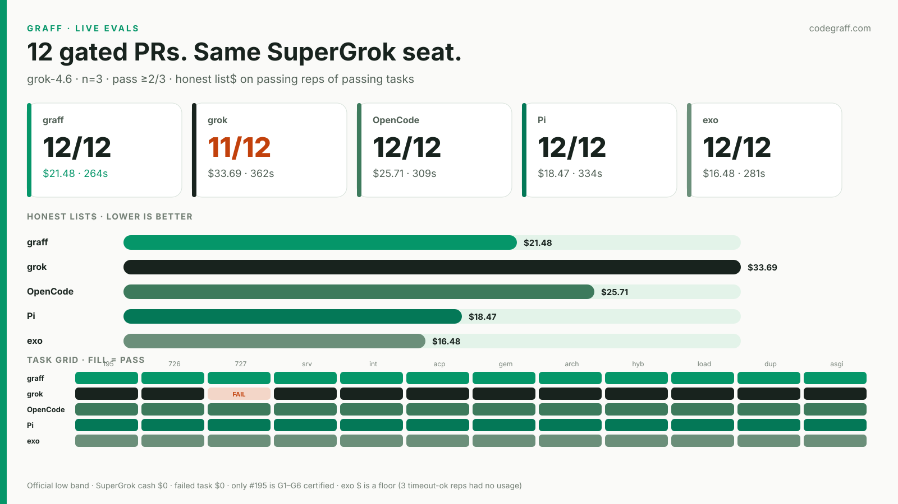

Five harnesses, one model (grok-4.6), no SPEC.md. Task pass is ≥2/3. Honest list$ is the official low band on passing reps of passing tasks. SuperGrok cash is $0.

Failed tasks contribute $0. exo's $16.48 is a floor — three timeout-ok reps recorded no usage.
| Harness | Reps | Tasks | Honest list$ | Mean wall |
|---|---|---|---|---|
| graff | 35/36 | 12/12 | $21.48 | 264s |
| grok | 33/36 | 11/12 | $33.69 | 362s |
| OpenCode | 36/36 | 12/12 | $25.71 | 309s |
| Pi | 35/36 | 12/12 | $18.47 | 334s |
| exo | 34/36 | 12/12 | $16.48 | 281s |
graff-195 is G1–G6 certified. The other 11 are published live tasks.graff-727 at 1/3.list$ high-bands the rep sum. Do not tweet that column.›).Receipt and rebuild: artifacts/graff-evals-live/RECEIPT.md · python3 graff-evals/plot_live.py --from-jsonl